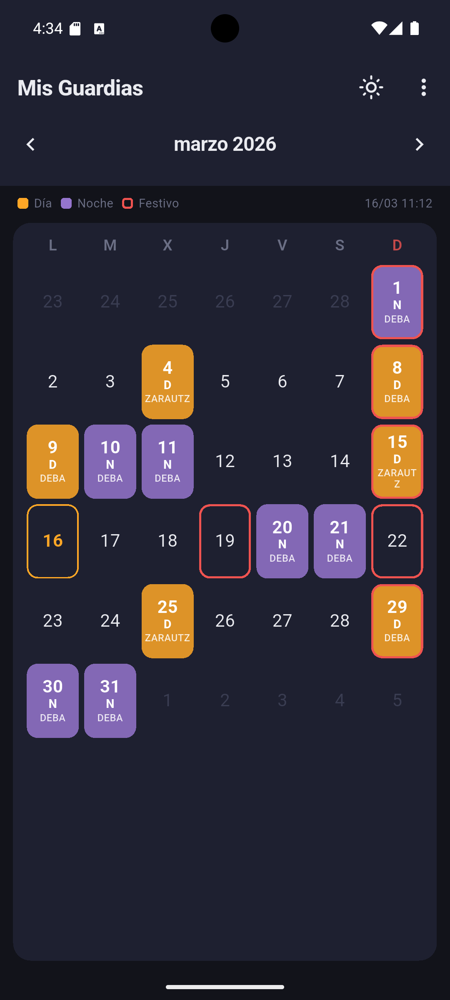
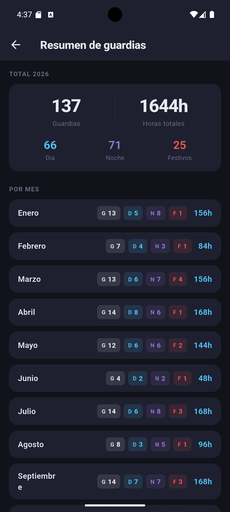
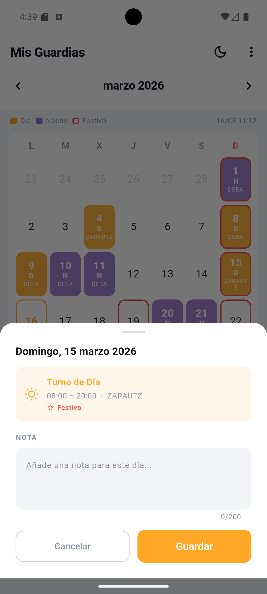
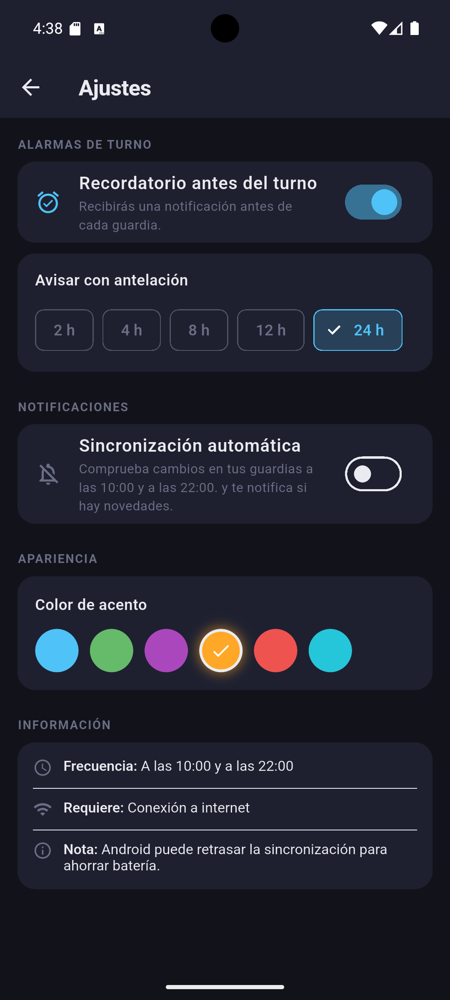

RTSU Gipuzkoa · v1.2.2
Tus turnos,
siempre al día
Gestiona y visualiza tus guardias de forma automática. Sincronización directa con el portal del trabajador, recordatorios y estadísticas de un vistazo.
Gestiona y visualiza tus guardias de forma automática. Sincronización directa con el portal del trabajador, recordatorios y estadísticas de un vistazo.

Funcionalidades
Navega entre meses con un gesto. Tus turnos D y N siempre visibles de un vistazo.
A las 10:00 y 22:00 la app actualiza tus turnos en segundo plano, sin que hagas nada.
Configura avisos 2, 4, 8, 12 o 24 horas antes de cada turno para no pillar a nadie por sorpresa.
Consulta el total de guardias, horas trabajadas y reparto día/noche mes a mes.
Añade anotaciones privadas a cualquier día del calendario.
Personaliza el color de acento y elige el tema que mejor se adapte a tu turno de noche.
Capturas de pantalla



Disponible para Android. Conéctala con tu cuenta del portal RTSU Gipuzkoa y ten tus turnos siempre al día.